10:26 AM
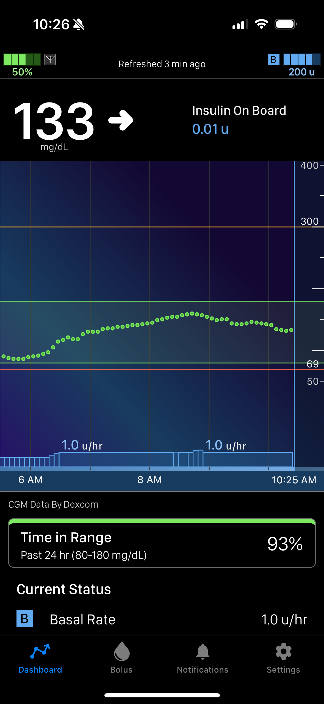I woke up and checked my blood sugar before my morning coffee. I usually have really good readings in the morning so I wasn't surprised.
11:36 AM
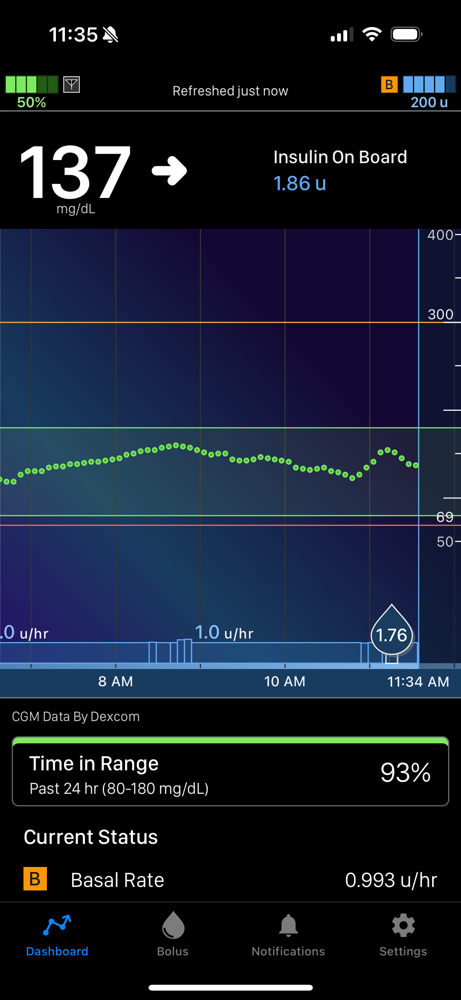I checked my sugar again after breakfast and gave myself 1.76 units of insulin. This is pretty low for me but my breakfast was about 15g of carbs and I already had a unit of insulin on board and I didn't want to go low later
12:14 PM
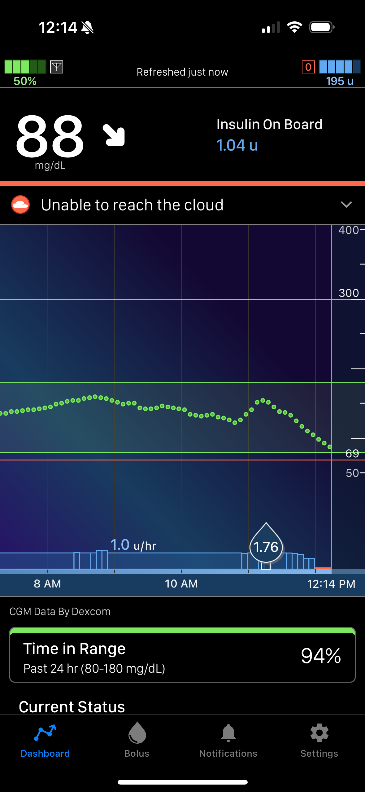Okay well jokes on me I guess. I checked my blood sugar after breakfat blood sugar around half an hour after and I was dropping! I drank a Capri Sun and hoped for the best.
12:32 PM

The Capri sun did not help me. I have a tendency to over correct my lows so I tried to eat a little bit of food to stabilize my sugar. I was also going to the park and didn't want to drop while I was walking.
3:35 PM

This is a while later, after I got back from the park. Looks like the sugar finally decided to kick in! I tend to run on the higher side (If you can't tell from my pump parameters) so this is pretty normal.
3:36 PM
I was hungry after my adventure so I ate a gluten free cheese quesadilla and some blackberries. I estimate about 35g of carbs for the meal because the quesdillas are small and usually one tortilla is about 12g of carb and the black berries were around 10g of carbs for the serving I was having. Then since my bloodsugar was on the rise I added an extra carb and added a correction into my full dose which was 5.92 units of insulin.
4:36 PM

An after meal spike is pretty common, I had almost seven units on board though so I didn't see a need for a correction. Also, after this morning I did not want to go low again.
4:51 PM
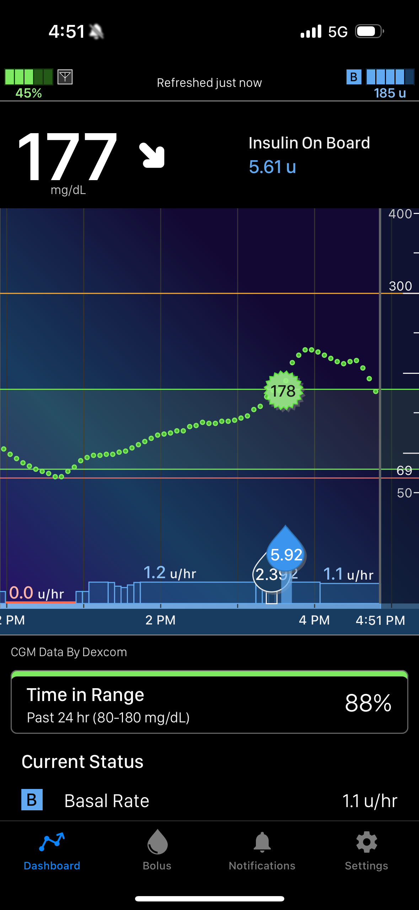Good thing I didnt correct! I checked my sugar to see if my insulin from lunch was kicking in. I'm starting to drop but this is good because Ive been on the higher side for a couple hours now.
7:23 PM
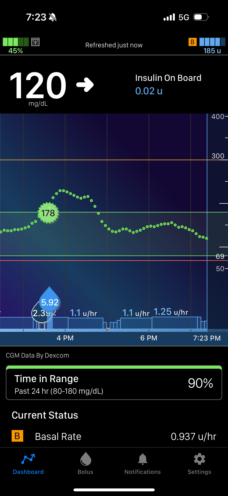OOh YEAH!! we are back on track baby! I checked to see where my sugar went after I was dropping ealier and I am doing perfect!
7:48 PM
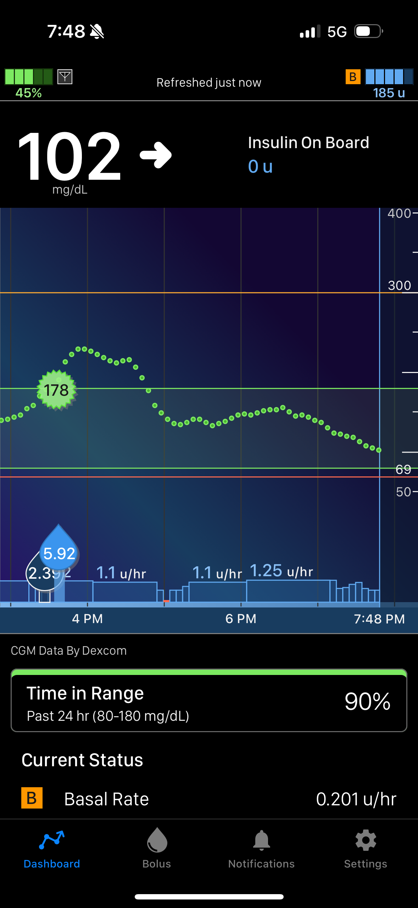Still doing good, as I mentioned I tend to run high so even though this is basically a perfect blood sugar I'm a little worried I'm going to drop low later. But, for now I'm just going to leave it be.
10:59 PM
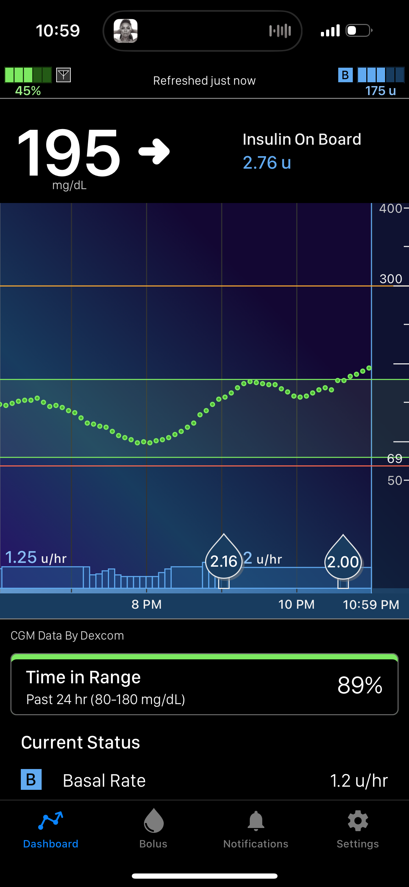I had a snack and a sugary drink without bolusing so now I'm back on the climb. I gave myself 2 units of insulin because I didn't want to go higher but I was about to go out and I didnt want to drop low while I was walking.
11:41 PM

So looks like I'm still running high and going up because my Tslim app is giving me an alert. But I was still out and about so I didn't do anything so I wouldn't drop low. I'm also expecting my blood sugar to get lower because I'm doing physical activity, also my circadian rythym makes my sugars stabilize at night as my body gets more relaxed and tired.
12:49 AM
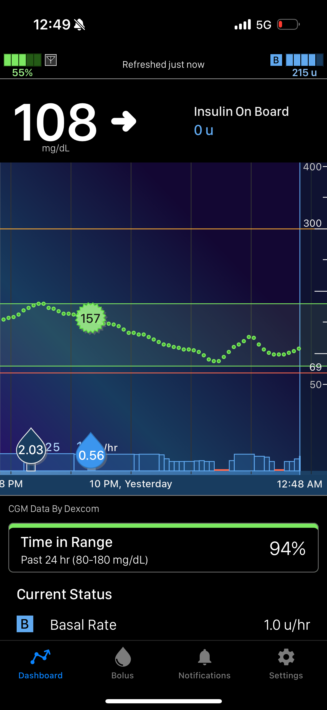Never doubt a diabetic. I know I was probably stressing you out with the past few entries but I knew what was going to happen! I'm also returning home so I don't see a need for any sugar or protein.
1:22 AM
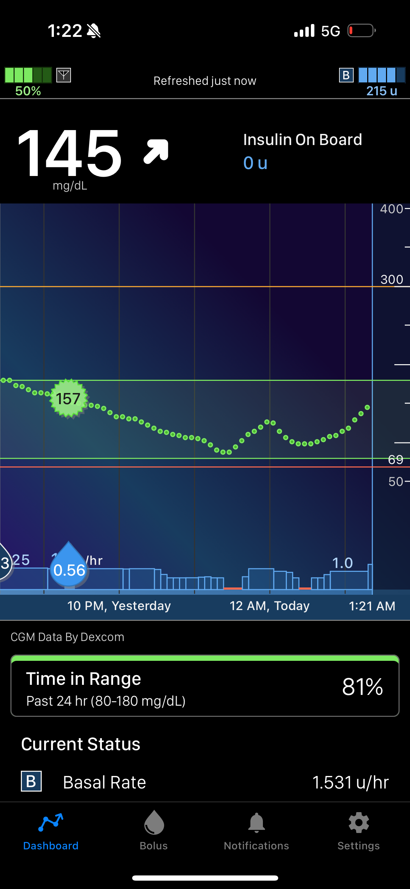I wanted a late night snack. I was really tired. I forgot to give insulin. But my pump has control IQ where it can adjust the rate of insulin I have in my basal rate, so I'm going to let it work it's magic
1:44 AM
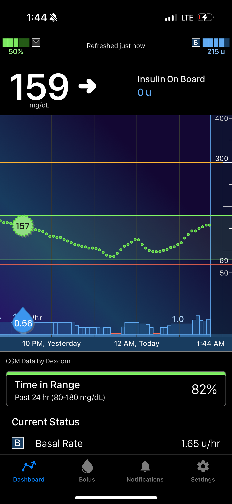Checking before I go to bed. looks like control IQ is working its magic. (you can see at the bottom it increased my insulin to 1 unit an hour). I also like to go to sleep with a blood sugar over 120 because waking up in a cold sweat and drinking a Capri Sun on the floor in front of my roomates is the worst!! so no dropping low tonight!
1:51 AM
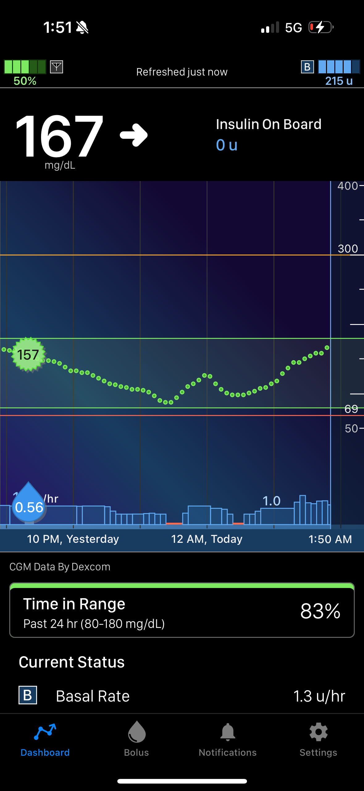Okay I stayed up a little longer most likley doom scrolling on Instagram Reels. So this is my offical last check before bed and I'm looking good! Goodnight!